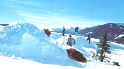
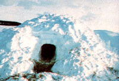
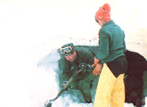
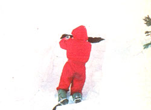
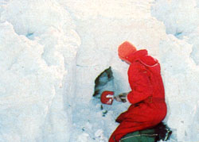
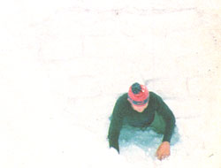
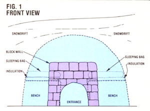
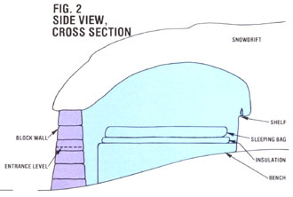
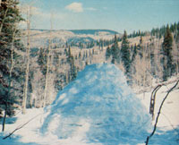

During the winter in the northern Rockies, one can sometimes see a ptarmigan making its home for the night: In full flight, the plump white bird will suddenly dive into a soft drift, hunker down in the resulting depression, and let blowing flakes settle on its feathers to form a protective blanket.
Snow, you see, is one of nature's most practical insulators. The falling flakes, each of which may contain more than a thousand loosely clustered ice crystals, can pile up into a fluffy mass (composed of as much as 90% air) that is virtually-in form and effect-the frozen equivalent of goose down.
Many of nature's creatures, in fact, use the heat-retaining qualities of snow for protection from winter's cold. But we humans, in all of our "wisdom", generally cling to our dependence upon technology . . . even in situations such as winter mountaineering trips, where-for shelter-we most likely sit huddled within the frigid confines of thin ripstop nylon walls. Worse yet, some individuals have actually perished needlessly from "exposure" to snow and cold, when a little knowledge of the resources at hand-and an ability to use those materials-could have saved their lives.
That's why, after many years of laboring as a trapper and guide-and after doing considerable search and rescue work here in the mountains of Colorado-I made a special effort to work out effective methods for building snow shelters. It's also why, when I now lead a group on a winter survival crosscountry tour, I don't allow my students to bring tents. Instead, I teach them to use their wits, and the crunchy substance beneath their feet, to make overnight homes.
An ideal spot for a snow cave would be a firm bank or drift that's six feet or more deep. But not everyone who needs winter shelter, of course, will find a place where the precipitation is that substantial . . . and even those who do will sometimes discover-early in the season, especially-that the piled crystals are too loose and powdery to make good caving material.
Fortunately, one of the characteristics of snow is that it tends to compact itself (and harden) once it's been disturbed. So when the cover is too shallow to accommodate a cave, you can build yourself an "artificial" drift in which to burrow: Find a hill that's 10 to 20 feet high and covered with 24 inches or more of snow, and then-with a shovel, your feet, or whatever-push the white matter down the incline to form a large pile at the bottom. With that done, wait 10 to 20 minutes to let the material "set", and then proceed to dig your cave.
Likewise, if you find a site where a drift is sufficiently deep but not firm, you can tromp around the area and poke the powder repeatedly with a stick or your ski polesperhaps also mounding more snow on top and stirring that up a bit-to encourage the mass to harden.
In any case, it's important to remember that if you're in an avalanche-prone area, you need to be very careful about choosing a site. Always check with rangers for snow condition reports before venturing into the wilds . . . and be aware that the lee-windless-sides of mountains are particularly dangerous, and that new snow on the ground increases the danger of a slide.
Virtually every book I've read on the subject of snow caving recommends carving a narrow tunnel into a drift or bank, and then hollowing out a larger living area-at the interior end of the shaft-by scooping out the material and transporting it through the burrow to the outside. I've found, however, that the method is very time-consuming . . . and that a digger is likely to get a kink in the back-and snow down the neck-in the process.
Therefore, I've come up with what I believe is a much better technique: First, open a large vertical hole (about four feet on a side, working from "ground" level up) directly into a drift or pile of snow. You can use a lightweight folding shovel-a tool that I think all winter back-country enthusiasts should carry-or, in a pinch, some kind of make-do implement . . . such as a snowshoe, ski, or flat stick.
When the "doorway" is done, go on to excavate your living quarters by digging out a rounded, dome-shaped area (a flat roof will sag and collapse) that's somewhat wider and higher than the entrance itself. The exact dimensions of your abode will, of course, be up to you . . . and will depend upon the number of people you intend to house. Given the right snow conditions, you can construct caves large enough for six or more individuals . . . but a smaller shelter-such as the two-person model shown in Figs. 1 and 2-takes less time to build, tends to be more stable, and is a more appropriate project for beginners.
Once you've hollowed out the cubicle, take some of the loosened snow and pack it up to form a sleeping bench (or two or three) that's 20 inches or more high, a bit wider than a sleeping bag, and as long as its occupant-to-be is tall. If you're building a one-person shelter, you can dig a fairly shallow chamber and position the single platform parallel to the opening. If you're making a two-person grotto like the one in the accompanying illustrations, you'll need to excavate a deeper cavity and place a bed on each side of the doorway.
After you've finished contouring each bench to your satisfaction, lay a thick "mattress" of insulating material-spruce or fir boughs, dry grass, or a backpacking padon top, and cover that with your sleeping bag. Be careful not to put any substantial weight on the bench just yet, however . . . you'll need to give the snow a chance to settle before you take your first nap.
Since the next major step in the cave construction is to block up the original 4' X 4' entry hole, it's a good idea to move the rest of your gear inside first. (This is another advantage of my snow-caving technique . . . you don't have to push, pull, and squeeze your equipment through a tiny, confining burrow to get it under shelter.) You may also want to carve a shelf or two in the cavern's interior surface, to hold a candle and other small items . . . and thrust a short stick partway into the wall to make a handy clothes hook.
Now-using your shovel, a snow saw, or just your hands-fashion "bricks" from the material that you scooped out of the cavity. For starters, try to make a number of cakes that are the approximate size (precision isn't required here) of a standard 8" X 8" X 16" cinder block, and then-as you build the wall-custom-tailor whatever others you need to fit specific spaces.
To fill the opening, lay the bricks in courses just as a mason might. Start with a horizontal foundation of end-to-end bricks across the entrance, and then position each block in the succeeding rows so that-whenever possible-it straddles the juncture of the two cakes below it. Remember, too, to spread a handful or so of snow "mortar" between the chunks as you work. The final product will be a sturdy wall that completely closes off the cavity, bottom to top.
At this point, take a break (gather firewood, get some camp chores done, go on a hike, whatever) and allow the wall a chance to firm up. After 20 minutes or so, you and your domicile will be ready for the last few construction steps.
Using a shovel or flat stick, cut a small entrance hole (this one should be just big enough to crawl through) in the bottom center of the snow-brick wall. Ideally, the highest part of the opening should be lower than the top surface of the sleeping benches (rising body heat will then be contained inside the cave), so dig down as close to "floor" level as you can when you cut this cavity.
Just about here in their instructions, many survival and winter camping manuals will tell you to crawl into the cave and-with a stick or ski pole-poke a couple of small holes through the roof for ventilation. I don't follow this practice myself, however, for two reasons: [1] Snow is relatively porous and-in my experience-usually allows plenty of breathable oxygen to pass through the walls and into the cave from outside. [2] Vent holes let rising warmth escape and draw cold air in through the entrance . . . thus defeating the purpose of the shelter.
(EDITOR'S NOTE: Though many snow-cavers agree with Mr. Wilkinson's theories concerning vent holes, some do not. One possible compromise would be to thrust a couple of long sticks through the roof but leave the shafts in place, so that they can be pulled out for immediate ventilation if occupants begin to feel the symptoms-which include dizziness and difficult breathing-of oxygen deprivation.)
Interestingly enough, the same people who recommend roof vents will often also instruct you to build a small fire in your cave for warmth, and/or to use a cooking stove in the chamber for preparing meals . . . but these procedures also tend to get in the way of the intended function of your den. Combustion consumes oxygen, of course, and-in addition-the extra heat it produces will tend to increase the interior's humidity . . . which in turn will make you feel colder, and cause a crust of ice to form on the cave wall that effectively seals off the passage of air from outside. If you don't use a fire, the inside surface will remain dry, and any snow that gets on your clothes will brush off. But if you do use one-even a small backpacking stove-you'll get wet virtually every time you come in contact with the walls.
A much better idea, I think, is to reserve the cave strictly for sleeping and resting, and to do your cooking outdoors. If there's a strong wind, you could build a semicircular breakwall of snow blocks near your abode, and light a fire within its borders.
Although a cave is certainly one of the most effective shelters you can make from snow, it is by no means the only kind. In fact, there are a number of ways you can use snow to obtain protection from the elements.
If there's deep cover, for example, you can build a home simply by digging a 3- or 4-footwide trench to a depth of 4 (or more) feet. Then put skis, snowshoes, or tree boughs across the opening . . . place brush (or a sheet of plastic) over that . . . and pile an insulating layer of snow on top. Some folks also cut blocks and stack them around the trough (to make raised walls) before installing the roof, and others actually carve additional underground chambers-for storing gear and such-into the sides of the trench.
In forested areas you'll often find a funnel-shaped "bowl" in the snow on the windward side of a tree . . . and this can be fashioned into a snug home by lining the floor of the depression with boughs and covering the cavity with a roof made from layers of whatever materials are available, finished off with a thick coating of snow.
Of course, there's also the igloo . . . the classic Eskimo shelter, which-unless you've had considerable practice-can be pretty difficult to build. Here again, however, I've developed techniques that, I believe, make the task easier.
The traditional method involves cutting blocks and placing them end to end, on their narrow edges, in a circle that gradually spirals upward, round and round, one layer over another. In order to accomplish this, however-and to achieve a dome shape rather than just a vertical wall-each block must be carefully trimmed and positioned so that it both slopes in the ascending direction of the spiral and leans inward slightly.
To simplify the process, I place the rectangular blocks flat on their broad sides . . . make one circle of bricks . . . and then-on successive go-rounds-merely move each layer of blocks inward a couple of inches, so that the desired cupola shape is gradually formed. I use snow "mortar", too . . . both as I work and to fill any cracks and holes in the final product. Then, about half an hour or so after closing in the igloo, when the structure has hardened, I carve out a small entrance door.
Experience, they say, is the best teacher of all . . . and that's certainly the case when it comes to developing a proficiency at building (and camping in) snow shelters.
After a few winter back-country outings, for example, you'll acquire a sensitivity to the different kinds of snow-in terms of texture, moisture content, and "packability"-and to the degree to which varying conditions will affect the type of shelter you should (and/or can) build. New precipitation, for instance, is often too fluffy to make good material for a large cave . . . but might be just fine for a one-person chamber.
You'll also learn, rather quickly, that it's important to pace yourself as you work . . . making sure that you don't perspire excessively and-as a result-become overly (and perhaps dangerously) chilled. Always dress in layers, too, so that you can adjust the amount of clothing you're wearing to suit the weather and the activity at hand. And remember: To stay dry is to stay warm.
In addition, you may find that it takes some time to accustom yourself-both physically and psychologically-to life in a snow cave. You can't expect such a shelter to be the Waldorf-Astoria, but the grotto's temperature will hold at a range of 30° to 38°F (once you've been inside for a while), and neither you nor such items as jugs of water will freeze . . . even if the mercury outdoors dips to 30 below. Should you be caught in an emergency situation without a sleeping bag, then, a snow cave will still keep you relatively warm. If necessary, you can use a few isometric exercises (tense the muscles in your legs, hands, and feet for several seconds, then let them relax, to stimulate blood flow) off and on through the night to avoid frostbite.
Some folks find that the darkness and silence inside a snow cave can be disturbing . . . so be prepared, when you blow out your candle that first night in your shelter (and do be sure to extinguish the flame, so that it doesn't consume oxygen while you're sleeping), to cope with an instant attack of claustrophobia. Most people get used to the quiet and close quarters in a very short time, however.
During the day, if you leave the cave-to go for a hike or gather firewood or whatever-be sure to mark the entrance conspicuously so that you'll be able to find your home when you return. Remember, too, that snow has a way of "swallowing" camp litter . . . trash that, come spring, will show its ugly face all too plainly. Be sure to keep all refuse and waste in one place, and to pack it out with you when you leave.
And finally, I strongly recommend that you practice building snow shelters before placing yourself in a situation where you might need such a structure. A wilderness emergency-such as getting caught in a sudden blizzard-is not the ideal time to try to construct your first snow cave. And reading the information in this article and in other books is not, by itself, sufficient preparation for-say-going on an overnight cross-country tour without a tent. I always show my students a detailed narrated instructional slide program prior to an outing . . . but even then the participants generally take three or four hours to build their initial cave or igloo.
After you've had some experience, however, you should be able to carve out a shelter in an hour or less . . . so take some time this winter to teach yourself the art of snow caving. Find an appropriate site close to home, and spend an enjoyable afternoon or two practicing construction techniques. Once you've polished your skills, you'll be able to explore the wonders of winter's wilderness with confidence . . . knowing full well that a warm, comfortable home is never more than a few feet-of snow-away.
|
 You can build a snow cave even in shallow cover. Here, a winter backpacking group has made artificial drifts by pushing the snow down a slope to form deep mounds. |
 A finished snow shelter. This winter wilderness home is as safe and snug as any bunny’s burrow. |
 How to build a snow cave, Step 1: First, dig a large construction hole into a snow drift or mound, and excavate the dome-shaped area that will be your living quarters. |
|
 How to build a snow cave, Step 2: Then block up the entrance with snow “bricks” and “mortar” made from the material you scooped out of the cavity. |
 How to build a snow cave, Step 3: Use a small shovel or makeshift implement to open up a doorway in the snow wall. |
 How to build a snow cave, Step 4: The snow cave entry should be barely body-size. Remember: Practice makes perfect! |
|
 Figure 1. Snow Cave Front View |
 Figure 2. Snow Cave Cross Section |
 This igloo was built the Wilkinson way. A snow “overcoat” creates a cozy, weathertight nest. |